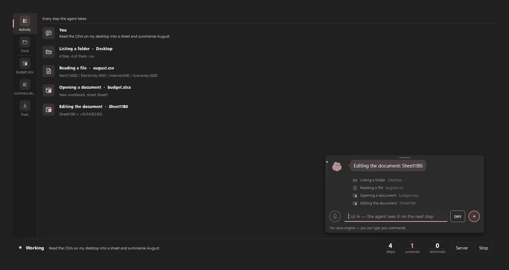
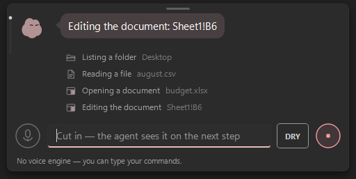
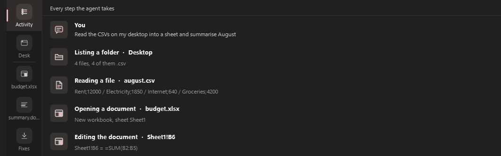
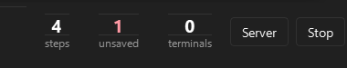

Desktop agent · Windows 11 & Linux
Your cursor stays yours.
The work goes to its desk.
Doppel is a Claude computer-use agent with its own desktop and its own cursor. It clicks, types and reads UI on an invisible desk — or drives yours without ever moving the pointer — while you keep working.
MIT · Python + PySide6 · one dependency outside the Anthropic SDK: it ships its own office

- 1 Every step it takes, in order
- 2 The bar: type, Dry-run, stop
- 3 Steps, unsaved files, terminals
What it actually does
Own desk
Long jobs run where your eyes aren't
The side_* tools open an invisible desktop with a cursor of their own. Filling forms, walking a multi-page flow, collecting data — it happens there, at full speed, while the desk you're looking at doesn't so much as twitch.
On Windows the desk is a real hidden desktop object; on Linux it's a real second X display. Anything you must witness stays on your desk — and it knows the difference.

Record
Every step is written down while it happens
Each run leaves a JSONL audit in runs/: which tool, what it ran on, whether it failed — and for document edits, a mandatory why. When the agent claims it did something, the claim is checked against that record, not against its own summary.
The screenshot is a real run — reading desktop CSVs into a sheet, then writing Sheet1!B6 = =SUM(B2:B5) — not a mock. Shown at capture resolution.

Gate
It can't quietly click Send
Irreversible clicks — Send, Delete, Buy, Submit, in any window, by any tool — wait for you. The approval hook defaults to deny when nothing is there to answer. Dry-run is an allowlist: a tool it has never seen is blocked by default, not trusted by default.
Recorded workflows replay only while their signature still matches; the moment a screen differs, playback halts instead of improvising.

From words to a checked result
- 01Plan. Dry-run maps the job against the allowlist and shows you the steps — nothing moves yet.
- 02Work. The loop runs one step at a time, re-reading state after each action instead of assuming. A failed step halts the run; it does not improvise past it.
- 03Record. Steps, results and the reason for every document edit land in the run's audit log as they happen — a halted run still leaves its record.
- 04Check. The closing claim is compared against the record. Unsupported claims are flagged instead of believed.
It works where your work already is
Files & shell
Read, write and edit files directly; run_shell for bulk work that would be fifty clicks in a GUI.
Real terminals
Persistent PTY sessions — ConPTY on Windows, pty on Linux — for the programs that wait on input: REPLs, servers, interactive tools.
Its own office
Reads and writes .xlsx and .docx without Office installed — and evaluates formulas with a real engine instead of guessing what a cell is worth.
MCP servers
External tools arrive over MCP with their schemas shown verbatim and every call approved — the definitions are never rewritten on the way in.
Your apps, by name
“Open Discord” resolves against the Start Menu (Windows) or XDG desktop entries (Linux); a miss answers with the closest names, not a four-screen hunt.
Accessibility trees first
UI Automation on Windows, AT-SPI on Linux. Reading the controls is cheaper and more precise than looking at pixels — screenshots are the fallback, not the method.
The controls are the product
Default deny
The approval hook answers “no” when nothing is attached to answer it. Destructive actions don't get the benefit of the doubt.
Esc, three times
Own polling thread, 0.8-second window, works during waits and mid-generation. The kill switch doesn't queue behind the thing it's stopping.
Allowlist dry-run
kuru.py plans against a read-only allowlist. Unknown tools are blocked by default and say so; capabilities it doesn't have can't be invented into a plan.
Claims vs record
The closing message is cross-checked against what actually ran. A claim with no supporting step is reported as unsupported.
Secrets stay out
One module touches the environment; the API key lives in .env, which is gitignored. A pre-commit hook and CI scan with the same pattern list, from one source file.
Workflows that halt
A recorded workflow replays only while the screen still matches its signature. Drift stops playback — it doesn't guess.
Free, MIT, bring your own key.
The app costs nothing and asks for nothing. You pay only your Claude API usage, on your account. No tier table, because there is no tier table.
Questions worth asking
Will it take over my mouse?
No. Real-desktop clicks and keys go in as posted window messages on Windows (WM_CHAR, WM_LBUTTON*) — the measured paths never call the physical cursor — and long jobs can run entirely on its own desktop. On Linux the same idea holds: input goes to a second X display by construction, and desktop input is a capability it probes rather than assumes.
What if it gets something wrong?
The loop halts on the first failed step instead of improvising past it, every step is recorded as it happens (a halted run still leaves its record), destructive clicks wait for you, and Esc ×3 stops everything mid-action. The design assumption is that it will sometimes be wrong, and each layer exists for that day.
Does it really work on Linux?
Yes — the port is in this repo, with a Linux CI job (Xvfb + AT-SPI) running on every push. Linux gets the full own-desk story via a real second X display, and it picks the working input capability per session: XTEST under X11, ydotool or the OS portals under Wayland, nothing-but-its-own-desk when headless. Honest boundary: the portal path is implemented and mock-tested, and is proven against real Wayland desktops case by case — the README says exactly which parts are verified where.
Where does my data go?
To Anthropic, with your key, because that is the model. Screenshots are pruned in-context by design (a 1080p frame is real tokens), run records stay in runs/ on your machine, and there is no telemetry of ours anywhere in the codebase.
Why does it have its own office?
Because “open Excel and type the formula” is a bad plan when the machine may not have Excel. Shipping openpyxl, python-docx and a formula engine means the agent edits a real workbook it can actually check — and never reports a number it didn't compute.
Keep your cursor.
Hand over the busywork.